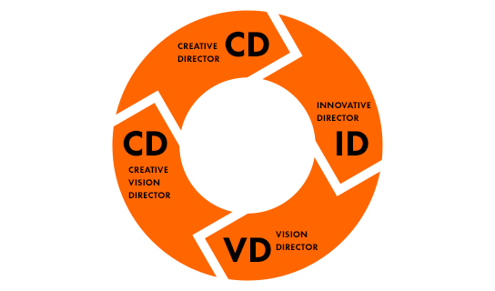

Culture
회사와 직원이 함께 가치와 문화를 만듭니다.
ST!S
-
SERVANT 우리는 섬김의 가치를 공유합니다.
ST Culture의 대전제는 ‘우리는 서로 섬김으로써 자유로워진다’입니다. 전 직원이 어떻게 서로를 도울 수 있을지를 고민하며 행동하고자 노력합니다. 매주 월요일 오전에는 전사 회의가 열립니다. 직급이나 부서 상관없이 서로의 발전을 위해서 의견을 내고, CEO에게 이의를 제기할 수도 있습니다. 어느 부서에서든 큰 이벤트나 사람들 도움이 필요한 일이 있을 때 전체 참여를 원칙으로 합니다. 특히, 시험장 이벤트는 우리만의 문화를 잘 드러내는 장면입니다.
-
THOUGHTFULNESS 우리는 감사받을 수 있는 일을 합니다.
ST Culture의 대전제는 ‘우리는 서로 섬김으로써 자유로워진다’입니다. 전 직원이 어떻게 서로를 도울 수 있을지를 고민하며 행동하고자 노력합니다. 매주 월요일 오전에는 전사 회의가 열립니다. 직급이나 부서 상관없이 서로의 발전을 위해서 의견을 내고, CEO에게 이의를 제기할 수도 있습니다. 어느 부서에서든 큰 이벤트나 사람들 도움이 필요한 일이 있을 때 전체 참여를 원칙으로 합니다. 특히, 시험장 이벤트는 우리만의 문화를 잘 드러내는 장면입니다.
-
INNOVATION 우리는 혁신을 거듭합니다.
ST Culture의 대전제는 ‘우리는 서로 섬김으로써 자유로워진다’입니다. 전 직원이 어떻게 서로를 도울 수 있을지를 고민하며 행동하고자 노력합니다. 매주 월요일 오전에는 전사 회의가 열립니다. 직급이나 부서 상관없이 서로의 발전을 위해서 의견을 내고, CEO에게 이의를 제기할 수도 있습니다. 어느 부서에서든 큰 이벤트나 사람들 도움이 필요한 일이 있을 때 전체 참여를 원칙으로 합니다. 특히, 시험장 이벤트는 우리만의 문화를 잘 드러내는 장면입니다.
-
SSPEED 우리에게 스피드는 모든 업무의 기본입니다.
ST Culture의 대전제는 ‘우리는 서로 섬김으로써 자유로워진다’입니다. 전 직원이 어떻게 서로를 도울 수 있을지를 고민하며 행동하고자 노력합니다. 매주 월요일 오전에는 전사 회의가 열립니다. 직급이나 부서 상관없이 서로의 발전을 위해서 의견을 내고, CEO에게 이의를 제기할 수도 있습니다. 어느 부서에서든 큰 이벤트나 사람들 도움이 필요한 일이 있을 때 전체 참여를 원칙으로 합니다. 특히, 시험장 이벤트는 우리만의 문화를 잘 드러내는 장면입니다.
STian은 모두 평등한 Director입니다.
모든 STian은 책임자(Director)로서 자신의 업무를 주도적으로 진행하며 서로 ‘OO님’이라고 부르는 수평적인 기업문화를 통해 자유롭게 협업하고 토론합니다.
STian Life

전사 전시회

전사 탁구대회

전사 합창대회

응원 이벤트

ST NEXT